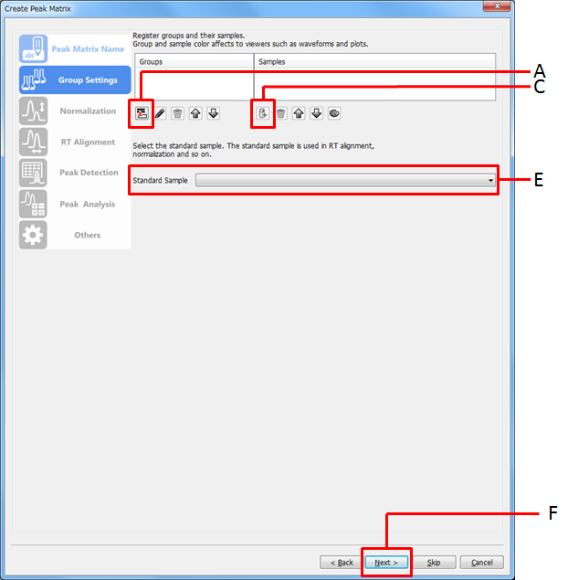

Select [Processing] in the menu bar and then select [Quantitation] > [Show Peak Matrix] from the drop down menu.
The Quantitation dialog appears.
Select the peak matrix from the drop down list.
Click the (Group Plot)/ (Overlap Plot) toggle buttons to select the plots to be displayed.
Double-click the peak in the Quantitation dialog.
The Group Plot and/or the Overlap Plot appears.
Group Plot
Overlap Plot
Select [Processing] in the menu bar and then select [Quantitation] > [Create Peak Matrix] from the drop down menu.
The wizard for creating MassBank records starts.
Enter the settings in the Peak Matrix Name page.

Enter a peak matrix name.
Click [Next >].
Click [Skip] to save the peak matrix settings that have been entered. To resume peak matrix creation, refer to ???.
Enter the settings in the Group Settings page.
Click the
 icon.
icon.
Enter the group name and click [Add]
Click the color button to change the group color if necessary.
Click the icon and select samples to be included in the group.
Repeat steps A - C to set other groups.
To change the group settings (name and color), select the group and click the icon.
To delete the group, select the group and click the icon.
Select the sample to be used as the standard from the drop down list.
Click [Next >].
Enter the settings in the Normalization page.
Select [Executing normalization] and enter the settings for normalization.
Select [Not executing normalization] if normalization is not necessary.
Click [Next >].
Enter the settings in the RT Alignment page.
Select [Executing RT Alignment] and enter the settings for RT alignment.
Select [Not executing RT Alignment] if RT alignment is not necessary.
Click [Next >].
Enter the settings in the Peak Positions Determination page.
Select the peak positions determination method from the drop down list.
Select the peak values calculation method from the drop down list.
Select the filling missing values method from the drop down list.
Click [Next >].
Enter the settings in the Peak Analysis page.
Select [Executing peak scaling].
Select [Not executing peak scaling] if peak scaling is not necessary.
Click the
icon.
Select the scaling and click [OK].
Select [Executing peak analysis].
Select [Not executing peak analysis] if peak analysis is not necessary.
Click the
icon.
Select the analysis method and click [OK].
Click [Next >].
Enter the settings in the Others page (Comparative Identification).
Select [Executing identification] and enter the settings for comparative identification.
Select [Not executing identification] if comparative identification is not necessary.
Click [Next >]
Enter the settings in the Others page (Merge Matrix Peaks).
Enter the RT tolerance and the m/z tolerance.
Click [Next >]
Confirm the entered values and click [Finish].